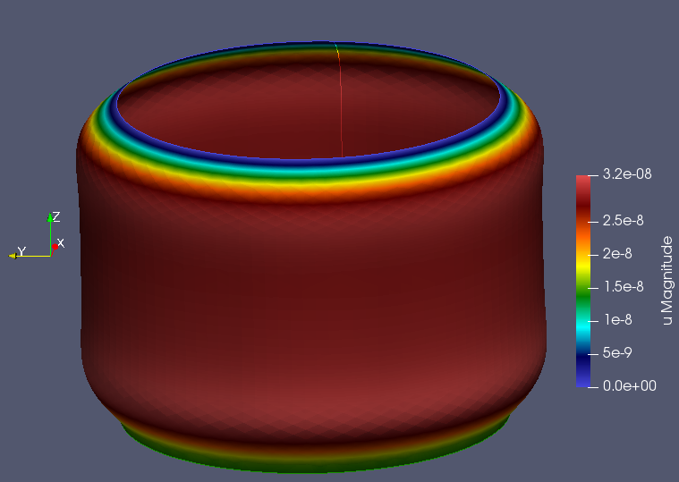

Table of Contents
1. Purpose
2. create the mesh
//+
SetFactory("OpenCASCADE");
Mesh.MeshSizeFromCurvature = 100;
//εξωτερικός κυκλος
//+
Circle(1) = {0, 0, 0, 1.65, 0, 2*Pi};
//+
Curve Loop(1) = {1};
Plane Surface(8) = {1};
//+00
Extrude {0, 0, 3} {Curve{1};}
//+
//+
3. automate export of mesh to elmer
For converting the .geo file to elmer mesh by scripting we need the following script:
gmsh -2 cylinder_shell.geo -o cylinder_shell.msh ElmerGrid 14 2 cylinder_shell.msh -autoclean
4. write the sif file
the full sif file is included.
to mention what to change each time we have:
We need to elmergui to find boundary conditions and bodies.
On shells the mesh is 2d, that's why it is rendered with gmsh -2 command.
So we have only surface and curve boundaries.
The surfaces are the bodies.
So we apply a normal pressure on surface 2, which is the cylinder:
Body Force 2 Normal Pressure = Variable Coordinate 3; Real MATC "-2000*(3.0-tx)" End
the solver I used is iterative
Solver 1 Equation = "Shell equations" Procedure = "ShellSolver" "ShellSolver" Large Deflection = True Displace Mesh = True Linear System Solver = "Iterative" Linear System Preconditioning = ILU2 Linear System Max Iterations = 10000 Linear System Convergence Tolerance = 1e-5 Linear System Iterative Method = GCR Linear System GCR Restart = 100 Linear System Abort Not Converged = False Steady State Convergence Tolerance = 1e-09 Nonlinear System Convergence Tolerance = 1e-8 End
the boundary condition at the base where it touches the ground, and the tank has max pressure is:
if the connection is to stiff, uncomment the DNU part.
Boundary Condition 1 Target Boundaries(1) = 1 U 1 = Real 0 U 2 = Real 0 U 3 = Real 0 !DNU 1 = Real 0 !DNU 2 = Real 0 !DNU 3 = Real 0 End
These are enough to check the results on paraview.
4.1. checking the results with plot
Add a second solver
Solver 3 Equation = "SaveLine" Procedure = File "SaveData" "SaveLine" Filename = "g5.dat" File Append = Logical True Polyline Coordinates(2,2) = Real 0.0 1.0 0.0 2.0 End
It applies to a vertical line on cylinder wall, need to check to GUI to see the line and the number
Boundary Condition 4 Target Boundaries(1) = 2 Save Line = Logical True End
Now it exports the pressure on wall as g5.dat
The .dat file has the following columns:
Data on different columns 1: Call count 2: Boundary condition 3: Node index 4: coordinate 1 5: coordinate 2 6: coordinate 3 7: u 1 8: u 2 9: u 3 10: dnu 1 11: dnu 2 12: dnu 3
the line is vertical on z axis, so we need the column 6 as abscissa.
The deflection is described at column 7 u 1 variable. This variable is \(\delta R\), change of diameter, due to pressure.
to plot the results I need:
plot "g1.dat" using 6:7 with lines,\
"g4.dat" using 6:7 with lines
each dat, file is for different pressure, material etc. This helps compare results.
the plot is give as follows:

5. results exported with paraview
the whole procedure is hard to follow, even on simpler geometries, without using gmsh, ElmerGUI and paraview.
paraview has also functions like plot over line and wrap by vector to view the plots and the results.
screenshots of how the tank is shown on paraview are:
6. final
what surprised me about FEM results, is that at pressure 0 point the deflection u is also near zero.
It is like near higher pressure does not affect nearby region so much.
The area affected it depends on thickness , but much more on the modulus E.
So a thin and elastic material is not affected overall by a force applied to a point. The only region affected is near the area force is applied. The rest of the structure is like no force never applied.
Above conclusion is validated by analytic equation of pressure of thin shell cylinder, which goes like:
\[\Delta R = \frac{q\cdot R^2}{E \cdot t}\], where q the pressure at height.
There is no variable of \(z\) height on above equations.
To visualize the above, there is a cylinder, holded on both edges, at constant pressure at the walls. The area that has some gradient on displacement, is near the ends, where the displacement changes from 0 to \(\Delta R\).

7. add a hole
To add a hole I tried to code a .geo file, but it was not sucessful, mostly because it was a surface.
So I modelled it on freecad, the procedure was:
- sketch a circle and extrude pad.
- sketch at a perpendicular plane the holes and pocket.
- explode the compound to get the external surface
- export the surface to .step
- import the .step to gmsh
- mesh the surface and export .msh
- convert to elmer mesh
- open ElmerGUI to find the new boundaries and bodies.
- adjust the sif file to the new conditions
- run the solver
- view the results on paraview
The lower hole is not moved because I added u=0 boundary condition. The most accurate is to add a thick tube as solid material.
Also tht vertical boundary that export the plot, it at 90degrees to the holes, and it is little affected by the stresses on the holes.